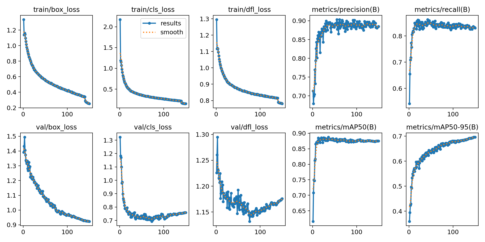

Arquitectura Híbrida y Modelo Final
Rediseñando la solución para separar la percepción de la lógica. Un nuevo enfoque que resuelve los problemas de sesgo y produce el modelo definitivo del proyecto.
El Fracaso del Fine-Tuning y el Nuevo Paradigma
Desafío
El modelo "Supermodelo" (fine-tuned) demostró un sesgo intratable hacia las clases `be_`, clasificando incorrectamente las bolas clásicas debido al fenómeno de Olvido Catastrófico.
Propuesta
Adoptar una arquitectura híbrida: entrenar un modelo YOLO más simple con "clases compartidas" y añadir un módulo de lógica para desambiguar el contexto del set de bolas.
Acciones
- Re-etiquetado automático del dataset a 25 clases híbridas.
- Entrenamiento de `yolov8m.pt` desde cero.
- Diseño de lógica de post-procesamiento con "votación".
Resultados
Un sistema final mucho más fiable, modular y predecible. El nuevo modelo híbrido alcanzó un rendimiento excelente y la lógica contextual resolvió los casos de ambigüedad.
Arquitectura Híbrida: Percepción + Lógica
Etapa 1: Detector Semi-Específico (YOLO)
Se entrena un modelo YOLO con una tarea simplificada: aprender a reconocer 25 clases "compartidas". Por ejemplo, la bola blanca clásica y la `be_white` se unifican en una sola clase `white`. El objetivo del modelo es la percepción visual robusta, no la desambiguación contextual.
Etapa 2: Módulo de Lógica y Votación
Un script de post-procesamiento recibe las detecciones de YOLO. Realiza una "votación" ponderada por confianza usando las "bolas delatoras" para determinar el set de juego. Luego, refina las etiquetas de las clases compartidas según el contexto.
Conocimientos y Conceptos Aplicados
Arquitectura Híbrida
Diseño de sistemas que combinan modelos de deep learning (para percepción) con módulos de lógica de programación clásica (para razonamiento y reglas), obteniendo lo mejor de ambos mundos.
Post-procesamiento
Etapa en un flujo de IA donde la salida "cruda" de un modelo se refina, se filtra o se enriquece mediante código adicional para mejorar la precisión y utilidad del resultado final.
Lógica Contextual
Capacidad de un sistema para tomar decisiones basadas no solo en una detección aislada, sino en el contexto global de la escena (ej. el tipo de set de bolas presente en la mesa).
Modularidad
Principio de diseño de software que separa un sistema en componentes independientes. Facilita el mantenimiento y la escalabilidad (ej. añadir un nuevo set de bolas solo requiere modificar la lógica).
Re-etiquetado Automatizado
Uso de scripts para "traducir" un dataset de un esquema de clases a otro, una tarea fundamental para poder probar nuevas arquitecturas sin re-etiquetar todo manualmente.
Entrenamiento desde Cero (Tabula Rasa)
Estrategia de entrenar un modelo desde una base genérica (como `yolov8m.pt` pre-entrenado en COCO) para evitar los sesgos y el olvido catastrófico de un modelo ya especializado.
Resultados del Modelo Híbrido Final
Rendimiento Final por Clase (mAP50-95)
El modelo final muestra un rendimiento excepcional en las clases `be_` (verdes) y un rendimiento sólido y equilibrado en las clases clásicas (azules), validando el éxito de la nueva arquitectura.
Matriz de confusión
- Rendimiento Dual del Modelo: El modelo exhibe dos niveles de rendimiento muy diferentes. Es perfecto para un subconjunto de clases (las que empiezan con be_) y tiene un rendimiento bueno, pero con confusiones notables, para el otro subconjunto de clases.
- Alta Precisión General: A pesar de algunas confusiones, la mayoría de las clases tienen una tasa de acierto (precisión en la diagonal) superior al 80%, lo que indica un modelo generalmente robusto.
- La clase background es bien reconocida: El modelo es bastante fiable identificando cuándo no hay ningún objeto de interés (92% de acierto) y, lo que es más importante, casi nunca confunde el fondo con un objeto.
| Categoría | Conclusión | Acciones Recomendadas |
|---|---|---|
| Rendimiento General | Fuerte pero inconsistente entre dos grupos de clases. | Investigar por qué las clases `be_` son perfectas. ¿Son de un dataset diferente? |
| Mayor Confusión | `red_11` y `purple_4` se confunden entre sí. | Revisar manualmente imágenes de estas clases. Podrían necesitar más datos o mejor diferenciación. |
| Segunda Confusión | `yellow_1` y `green_14` muestran confusión significativa. | Aplicar Data Augmentation centrada en variaciones de color para robustecer el modelo. |
| Falsos Negativos | La clase `red_11` a veces es ignorada (clasificada como `background`). | Revisar umbral de detección o mejorar las características que definen a `red_11`. |
| Puntos Fuertes | Casi perfecto para las clases `orange_13`, `dred_15` y `green_6`. | Analizar qué hace a estas clases fáciles de identificar y aplicar ese conocimiento a las más débiles. |
Precisión y pérdida
Precisión y Recall
Ambas métricas se disparan y consolidan en valores excelentes (precisión ≈ 0.90, recall ≈ 0.88), demostrando que el modelo es altamente fiable: realiza predicciones certeras y es capaz de identificar la mayoría de los objetos de interés.
mAP50 (Precisión Media a IoU 0.5)
Esta métrica se estabiliza en un notable valor de ≈0.88, confirmando la alta competencia del modelo para ubicar objetos correctamente bajo un criterio moderado.
mAP50-95 (La Métrica Clave)
Siendo el indicador más riguroso, esta curva muestra una mejora sostenida y constante a lo largo de todo el proceso (llegando a ≈0.70). A pesar del incipiente sobreajuste, la capacidad real del modelo para localizar objetos con alta precisión sigue en aumento.
Pérdidas de Entrenamiento (Fila superior)
Observación: Las curvas `train/box_loss`,
`train/cls_loss` y `train/dfl_loss` exhiben un comportamiento ejemplar, con un rápido
descenso inicial que se suaviza hasta alcanzar una meseta estable.
Conclusión: Esto indica un proceso de
aprendizaje efectivo y sin inestabilidades. El
modelo asimila la información del set de entrenamiento de forma constante y robusta.
Pérdidas de Validación (Fila inferior)
Observación: Las métricas de validación siguen
de cerca a las de entrenamiento. Sin embargo, la curva `val/cls_loss` toca fondo
alrededor de la época 80-90 para luego estancarse o subir ligeramente.
Conclusión: Esta divergencia es el indicio
clásico de un leve sobreajuste (overfitting). El
modelo comienza a memorizar los datos de entrenamiento en lugar de aprender patrones
generalizables.
Conclusiones Finales y Futuro del Proyecto
Conclusiones Clave
- La arquitectura híbrida ha demostrado ser la solución definitiva, produciendo un sistema robusto, preciso y sin los sesgos de los enfoques anteriores.
- El "Supermodelo" final ha alcanzado un rendimiento de nivel profesional (mAP50-95 de 0.716 en el set de prueba), validando todo el ciclo de desarrollo.
- Este proyecto encapsula un ciclo de vida de IA completo: desde la recolección de datos, pasando por múltiples iteraciones de entrenamiento y depuración, hasta el diseño de una arquitectura de software avanzada.
¡Proyecto Completado! El Futuro
1. Sistema de Visión Completo
Integrar el modelo `best.pt` con el módulo de lógica contextual para crear un sistema unificado que ofrezca detecciones finales precisas y contextualizadas.
2. Integración con Vídeo
Aplicar el sistema de visión a streams de vídeo para realizar el seguimiento (tracking) de las bolas frame a frame y crear una representación digital en tiempo real de la partida.
3. Desarrollo del "Cerebro de Billar"
Con la percepción resuelta, el enfoque puede pasar al desarrollo de algoritmos de alto nivel: cálculo de trayectorias, sugerencia de tiros o arbitraje virtual.